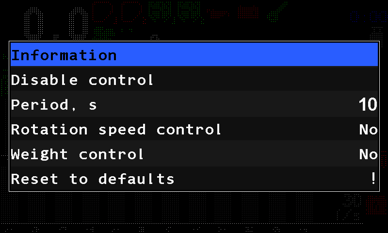

Dispenser shaft sensor
The parameters of the dispenser shaft sensor — rotation control against the wheel, or weight control by the mass applied.
The dispenser shaft sensor counts the turns of a dispenser driven from the ground wheel. The panel can watch it two ways: by its rotation against the speed sensor, or by the mass of product it applies. Open its context menu as in Sensor settings.

| Parameter | What it does | Range | Level |
|---|---|---|---|
| “Period, s” | The longest time between two shaft pulses. If the shaft gives no pulse for longer while the machine sows or moves, the panel raises “No rotation”. Default 10 s. | 1 … 60 | Operator |
| “Rotation speed control” | Watch the shaft rotation against the travel speed. | “No” / “Yes” | Agronomist |
| “Wheel, pulses” | Set by the rotation calibration. | 1 … 65535 | Agronomist |
| “Dispenser pulses” | Set by the rotation calibration. | 1 … 65535 | Agronomist |
| “Maximum error, %” | How far the shaft speed may stand from the speed the travel speed calls for; beyond it, while the machine moves, the panel raises “Low speed of rotation” or “High speed of rotation”. Shown only when “Rotation speed control” is “Yes”. Default 10 %. | 1 … 50 | Agronomist |
| “Weight control” | Watch the dispenser by the mass applied instead of by its rotation. | “No” / “Yes” | Agronomist |
| “Type of product” | Which product this dispenser meters. | Agronomist | |
| “Weight, gr” / “Weight, pulses” | Both set by the calibration by weight. | 1 … 65535 each | Agronomist |
With “Weight control” switched on, the context menu also holds “Dispenser calibration(weight)”.
Calibrations
- Rotation — for “Rotation speed control”: Calibrate the dispenser rotation.
- Mass — for “Weight control”; repeat it whenever the product changes: Calibrate the dispenser by weight.
The status screen shows the shaft pulse frequency F= in Hz, to three decimals. Its alarms: Fan or dispenser shaft: speed alarms, and with weight control Dosing by weight.
Something your machine does that this page does not answer? Write to support@agriwelt.com — an engineer answers.